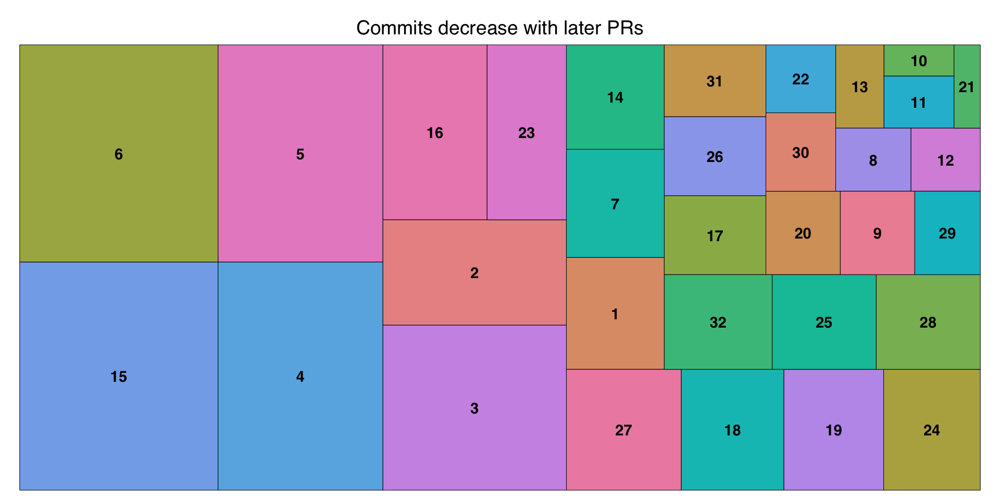

Gearing our Industry Statisticians up for Software success : A phase1b journey.
Audrey Yeo
Opinions do not reflect employerThis presentation has ALT text and as much as possible, uses colour-blind friendly palettesCode for this Quarto-rendered .html will also be shared
About phase1b

phase1b package history
2015 : Started as a need in Roche’s early development group, package development led by Daniel Sabanés Bové in 2015.
2023 : Refactoring, Renaming, adding Unit and Integration tests as current State-of-Art Software Engineering practice.
100% written in R and Open Source.
Website : genentech.github.io/phase1b/
Clinical Trials Statisticians understand :
…the combined Scientific and Business development of a therapy.
- Roadblocks to end points e.g. recruitment rates and failures, business assumptions and strategies
- Drug pharmacokinetics and pharmacodynamics e.g. latent drug effect
- Patient population e.g. rare diseases
My Journey at F. Hoffmann La-Roche
graduated MSc Biostatistics in 2020
started at RWD at Roche in mid 2021
joined R&D at Roche in mid 2022
- Project Lead Statistician in early Oncology Trials - Study Statistician for phase 1-2, phase 3 trialsfirst internal statistics presentation end 2022 on decision gating
- skills : R programming, writing functions, version control (GitLab, GitHub), presentation and communication
started
phase1bin July 2023phase1b’s first external tour at PSI (pic later) and useR! in 2024
Why Software Engineering ?
Why find solutions when we can also build them ?
Mathematics is Elegant
Building software can be inclusive and collaborative
I can create delightful experiences users and bring everyone along : values of inclusion, building great products, having an impact
Why Software Engineering : A response to dynamic decision making in early development

Skills needed : Covering the basics
- Onboarding June + July 2023
- R basics: coding and style
- Good function writing in R
- R debugging
- R advanced: package development
- Basics of Package Development in R
roxygen2introduction another resource- Good Software Engineering Practice for R Packages
in summary, gaps were : Git merging, Pull Requests, Styling, Debugging, Writing Tests
New beginnings :
Knowledge and skills for Statistical Software Engineering!
- Visualing branches :
Git kraken,VS Code Git Graph Extension - Checking :
pre-commit,Git hub checks,R CMD - Documentation : Writing (
roxygen2), building, reviewing documentation - Testing : Taking a reviewer perspective (
testthatandcheckmate) - Styling :
styler,prettier… building your own style
What is refactoring ?
- “Polishing an antique cup”, making new of “vintage”.
Tools for refactoring
Roxygen skeleton example for one user-facing function in phase1b
Tools for refactoring
- Variables are
typeddefined from packageroxygen2and it’s type asserted from packagecheckmate - Unit and integration testing takes on the perspective of a reviewer and to ensure the function calls calculates what it says it calculates (they are my favourite). Package
testthatandcheckmateare used here - Making
phase1ba State of Art Software1 - reproducible, robust, testable, intuitive and open to collaboration
What is debugging ?
To find a needle in the haystack systematically
- Takes the most time and is the most difficult
- Needs a lot more courage than creativity
- Maintains humility
embrace small steps as smaller PRs can be sizeABLE.
Polishin’ the vintage function - A checklist approach
One Design Document for entire function
One issue is the smallest task from (1)
One issue to one branch
One issue to one Pull Request (PR)
Create Test files for helper functions
Create Test files and example files for main function calls
The Design Document
User-facing functions start with Design-document
Helps achieve Clarity on the form and purpose of the user-facing function
Test regular and edge cases
Makes the rest of the work “easier” when the goals are clear
Most of the “skeleton” and “flesh” of the work can already be done in the because of 1-3
First successes
First Pull Request (PR) merged on Aug 29 2023 ü•≥
submitted an abstract by November 2023 at PSI
The phase1b journey in Pull Requests
| Pull Request | Order of work |
|---|---|
| test for dbetabinom | 1 |
| pbetaMix and qbetaMix | 2 |
| postprob | 3 |
| ocPostprob | 4 |
| betadiff | 5 |
| postprobDist | 6 |
| getBetaMix and dbetaMix | 7 |
| predprob | 8 |
| Design doc for predprobDist | 9 |
| h_predprobdist_single_arm | 10 |
| h_predprobdist | 11 |
| predprobDist | 12 |
| h_get_decisionDist | 13 |
| h_getbetaMixpost | 14 |
| Design-doc_ocPredprob | 15 |
| h_get_decision_one_Predprob | 16 |
| h_get_decision_two_Predprob | 17 |
| h_get_oc | 18 |
| ocPredprob | 19 |
| Design-doc_ocPredprobDist | 20 |
The phase1b journey in Commits
The phase1b journey in Chats
Features of Statistical Software Engineering
- Moving parts, collaboration is must
- Alignment of Forest vs Trees perspective
- Requires focused and deep thinking
- Small steps are good starts e.g. small PRs
- Creative work comes after foundation
- Systematic deduction is key to debugging
- Lots of theory and reading literature about new methodology
- Good engineering practices are habits, needs automation which needs practice which needs time
Good practices for new starter
Goal : introduce good practices and improve muscle memory and collaborate
- Mindset : Being dependent on others is normal. Asking questions are key because there are also many moving parts. Group chats are valuable in a safe space to ask questions.
- Regular stand ups
- Taking Small steps : are good starts
- Taking Systematic steps : no matter how slow
- e.g.
debug(),undebug(),options(recover = error),options(recover = NULL)
- e.g.
- older PRs are helpful to learn and reflect
Good practices for the Engineering Lead
Goal : introduce good practices and improve muscle memory and collaborate
- Patience
- Quick turnover for feedback
- Positive feedback but no over positiveness, always based on facts
- Use chats in PR can be helpful to precise the feedback
- Demonstrate small and systematic deduction during debugging
- Acknowledge learning styles can be different
- Allow developers to do the work, make mistakes and keep sharing rationale
Conditions for success from the phase1b work
Positive bias & Trust are win-win situations
Learning through mistakes is key
Safe space to be ask any questions, and iterate, even for a seasoned engineer
Kinds of feedback
“Great motivation to learn new skills”
“… it was always fun and easy to work with Audrey”
How I want to be a better Software Engineer
- Develop the skills of slow and systematic deduction (efficiency gains)
- Create more conditions for focused, systematic, deep and creative work
- Perceive small steps as good starts
- Continue having an open mind on what good practices are
- Be more patient with the process
- Fall on the engineering principles (testing, debugging, iteration, reliability, correctness…)
Sharing the Success story: Touring phase1b

Future outlook
Go through several more issues to complete and make it more delightful
submission to CRAN
Collaborate by contacting me
More software work for statisticians with values of : Inclusion, Diversity, Impact and Delightful user experience
Final Reflections
- I started off as a Clinical Trial Statistician (with good technical skills) but doing something I wasn’t prepared to do paid off
- There were new skills to gain, but it was always Confidence through Competence
- Can use this as a reference to build other packages and in other languages e.g. Julia, see my blog post
As in Statistics, no matter how much you’ve improved it’s not permanent

Thank you
Daniel Sabanés Bové
…and other colleagues at Data Science Acceleration at Roche
Open Source community and R community that do great work and share their knowledge
I’d love to know how this presentation relates to you or does not !
Some references
Thall P F, Simon R (1994), Practical Guidelines for Phase IIB Clinical Trials, Biometrics, 50, 337-349
Lee J J, Liu D D (2008), A Predictive probability design for phase II cancer clinical trials, 5(2), 93-106, Clinical Trials
Yeo, A T, Sabanés Bové D, Elze M, Pourmohamad T, Zhu J, Lymp J, Teterina A (2024). Phase1b : Calculations for decisions on Phase 1b clinical trials. R package version 1.0.0, https://genentech.github.io/phase1b
Code for this presentation
Some more references
Code with engineering. Microsoft
How to do a code review. Google
Pachecho, C, A Technical Journey into API Design-First: Best Practices and Lessons Learned link
Why We need to Improve Software Engineering in Biostatistics (October 26 2023 R/Pharma) link
Inclusive Speaker Course by Linux Foundation link
Audrey Yeo